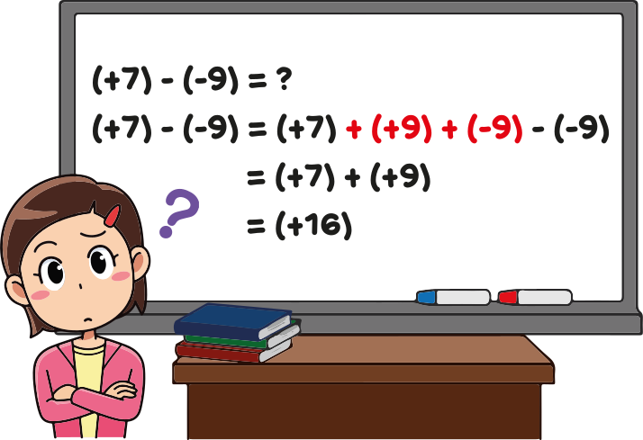

|
B5
|
- Soustraction de nombres relatifs
|
Activité Introduction
En entrant dans sa classe de mathématiques, Louise regarde le tableau et voit ceci :

-
- Expliquer pourquoi, à la deuxième ligne, on a le droit d'ajouter ce qui est noté en rouge.
- Expliquer alors pourquoi (+7) - (-9) = (+7) + (+9).
-
De la même façon, calculer les soustractions suivantes :
- (+15) - (-6)
- (+20) - (+11)
- (-6) - (+7)
- (-12) - (-3)
- Proposer une méthode simple permettant de calculer la différence de deux nombres relatifs.
Différence de deux nombres relatifs :
Pour soustraire un nombre relatif, on ajoute son opposé.
Exemples :
$➤\ (+15)-(+9) = (+15)+(-9)=+(15-9)=6$
$➤\ (+20)-(-11)=(+20)+(+11)=+(20+11)=31$
$➤\ (-6)-(+7)=(-6)+(-7)=-(6+7)=-13$
$➤\ (-12)-(-3)=(-12)+(+3)=-(12-3)=-9$
Simplification d'une suite de sommes :
Propriété :
Dans une somme ou une différence, on peut supprimer un couple de parenthèses
et le signe qui le précède à condition :
-
de ne rien changer lorsque le signe qui
précède les parenthèses est « $+$ ».
-
de prendre l'opposé de tous les nombres situés
à l'intérieur de ces parenthèses lorsque le signe qui les précède est
« $-$ ».
Exemples :
-
Exemple 1 :
On supprime les parenthèses précédées d'un signe $+$
$A = +(+3)+(-5)-(+6)-(-7)$
$A = \textcolor{red}{+(}+3\textcolor{red}{)+(}-5\textcolor{red}{)}-(+6)-(-7)$
$A = +3-5-(+6)-(-7)$
On supprime les parenthèses précédées d'un signe $-$ en prenant l'opposé des nombres dans la parenthèse
$A = +3-5-(+6)-(-7)$
$A = +3-5\textcolor{red}{-(}+6\textcolor{red}{)-(}-7\textcolor{red}{)}$
$A = +3-5\textcolor{red}{-}6\textcolor{red}{+}7$
-
Exemple 2 :
Exemple avec plusieurs termes
$B = -5\textcolor{red}{+(}-2+3-4\textcolor{red}{)}=-5-2+3-4$
$C = 12\textcolor{red}{-(}3-5+2\textcolor{red}{)}=12
\textcolor{red}{-}3\textcolor{red}{+}5\textcolor{red}{-}2$
Dans une suite de calcul sans parenthèse, on peut calculer rapidement en regroupant les termes négatifs et positifs :
(La règle générale est de toujours lié un signe au nombre qui suit)
Exemples :
$D = 15+6-7-9-24+6-5+3+12+4-8$
$D = \textcolor{blue}{15}\textcolor{blue}{+6}\textcolor{red}{-7}\textcolor{red}{-9}\textcolor{red}{-24}\textcolor{blue}{+6}\textcolor{red}{-5}\textcolor{blue}{+3}\textcolor{blue}{+12}\textcolor{blue}{+4}\textcolor{red}{-8}$
$D = \textcolor{blue}{15}\textcolor{blue}{+6}\textcolor{blue}{+6}\textcolor{blue}{+3}\textcolor{blue}{+12}\textcolor{blue}{+4}\textcolor{red}{-7}\textcolor{red}{-9}\textcolor{red}{-24}\textcolor{red}{-5}\textcolor{red}{-8}$
$D = \textcolor{blue}{46}\textcolor{red}{-53}$
$D = -7$